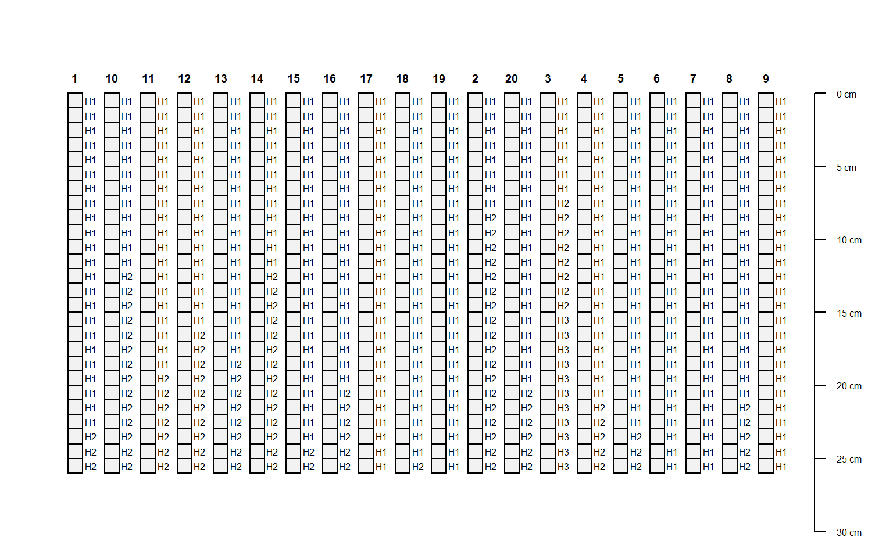

SPC-slice-methods.RdSlicing of SoilProfilecollection Objects
# method for SoilProfileCollection objects slice(object, fm, top.down=TRUE, just.the.data=FALSE, strict=TRUE)
| object | a SoilProfileCollection |
|---|---|
| fm | A formula: either `integer.vector ~ var1 + var2 + var3' where named variables are sliced according to `integer.vector' OR where all variables are sliced accordin to `integer.vector' `integer.vector ~.'. |
| top.down | logical, slices are defined from the top-down: |
| just.the.data | Logical, return just the sliced data or a new SoilProfileCollection object. |
| strict | Logical, should the horizonation be strictly checked for self-consistency? |
By default, slices are defined from the top-down: 0:10 implies 0-11 depth units.
Typical usage, where input is a SoilProfileCollection.
slab() and slice() are much faster and require less memory if input data are either numeric or character.
Either a new SoilProfileCollection with data sliced according to fm, or a data.frame.
D.E. Beaudette, P. Roudier, A.T. O'Geen, Algorithms for quantitative pedology: A toolkit for soil scientists, Computers & Geosciences, Volume 52, March 2013, Pages 258-268, 10.1016/j.cageo.2012.10.020.
library(aqp) # simulate some data, IDs are 1:20 d <- lapply(1:20, random_profile) d <- do.call('rbind', d) # init SoilProfilecollection object depths(d) <- id ~ top + bottom head(horizons(d))#> id top bottom name p1 p2 p3 p4 p5 #> 1 1 0 11 H1 -8.4806098 -5.854858 -6.455397 9.9110966 1.698955 #> 2 1 11 27 H2 -1.3730031 -21.313076 -6.813521 14.0540765 -8.968694 #> 3 1 27 49 H3 0.3075573 -30.042518 -2.072430 17.0510381 2.268630 #> 4 2 0 21 H1 2.6883412 -13.438373 -9.214566 -3.9675757 3.397193 #> 5 2 21 43 H2 0.8334879 -5.097752 -18.412770 0.5610075 6.606700 #> 6 2 43 67 H3 -11.5348197 -5.483949 -16.327257 2.5464138 5.102266 #> hzID #> 1 1 #> 2 2 #> 3 3 #> 4 4 #> 5 5 #> 6 6# generate single slice at 10 cm # output is a SoilProfilecollection object s <- slice(d, 10 ~ name + p1 + p2 + p3) # generate single slice at 10 cm, output data.frame s <- slice(d, 10 ~ name + p1 + p2 + p3, just.the.data=TRUE) # generate integer slices from 0 - 26 cm # note that slices are specified by default as "top-down" # e.g. the lower depth will always by top + 1 s <- slice(d, 0:25 ~ name + p1 + p2 + p3) par(mar=c(0,1,0,1)) plot(s)#>#> Object of class SoilProfileCollection #> Number of profiles: 20 #> Depth range: 11-11 cm #> #> Horizon attributes: #> id top bottom name p1 p2 p3 p4 p5 hzID #> 1 1 0 1 H1 -8.48061 -5.854858 -6.455397 9.911097 1.698955 1 #> 21 1 1 2 H1 -8.48061 -5.854858 -6.455397 9.911097 1.698955 1 #> 41 1 2 3 H1 -8.48061 -5.854858 -6.455397 9.911097 1.698955 1 #> 61 1 3 4 H1 -8.48061 -5.854858 -6.455397 9.911097 1.698955 1 #> 81 1 4 5 H1 -8.48061 -5.854858 -6.455397 9.911097 1.698955 1 #> 101 1 5 6 H1 -8.48061 -5.854858 -6.455397 9.911097 1.698955 1 #> .pctMissing sliceID #> 1 0 1 #> 21 0 2 #> 41 0 3 #> 61 0 4 #> 81 0 5 #> 101 0 6 #> #> Sampling site attributes: #> id #> 1 1 #> 2 2 #> 3 3 #> 4 4 #> 5 5 #> 6 6# note that pct missing is computed for each slice, # if all vars are missing, then NA is returned d$p1[1:10] <- NA s <- slice(d, 10 ~ ., just.the.data=TRUE) print(s)#> id top bottom name p1 p2 p3 p4 #> 1 1 10 11 H1 NA -5.8548578 -6.455397 9.9110966 #> 2 2 10 11 H1 NA -13.4383730 -9.214566 -3.9675757 #> 3 3 10 11 H1 NA -10.3855526 -7.098375 2.5332992 #> 4 4 10 11 H1 -8.5901997 2.9627848 10.151193 -11.2306271 #> 5 5 10 11 H1 0.6424483 3.8496457 -10.588296 -6.4422818 #> 6 6 10 11 H2 23.7399859 -0.2591901 -9.052555 -20.8919059 #> 7 7 10 11 H2 -1.7906226 12.5631182 10.155041 -11.2166802 #> 8 8 10 11 H2 16.2605369 30.5254192 -2.981834 4.4444243 #> 9 9 10 11 H1 5.9901877 -3.5102472 8.008558 10.0751648 #> 10 10 10 11 H1 3.5629678 -7.8370519 -12.682764 0.5135446 #> 11 11 10 11 H1 -10.4759609 11.0835563 6.091898 -11.0158648 #> 12 12 10 11 H1 2.7944855 3.3068807 7.344062 8.7263927 #> 13 13 10 11 H1 7.2643545 -1.5727642 -2.398947 -5.9866148 #> 14 14 10 11 H1 7.2887889 -15.5892160 -2.359251 -6.9244674 #> 15 15 10 11 H1 -6.2007632 5.0945328 -1.224811 9.4654761 #> 16 16 10 11 H1 -8.5552239 8.1917766 -10.093131 0.1293687 #> 17 17 10 11 H1 11.0809634 5.9647662 -3.048876 14.5724328 #> 18 18 10 11 H2 -28.2566058 -17.0327355 5.304949 6.7725202 #> 19 19 10 11 H1 -8.0746561 0.1143239 11.269240 21.3979607 #> 20 20 10 11 H1 -0.4986890 6.8664951 -1.350062 1.3553288 #> p5 hzID .pctMissing #> 1 1.6989552 1 0.1428571 #> 2 3.3971934 4 0.1428571 #> 3 3.7690728 7 0.1428571 #> 4 -14.3265582 11 0.0000000 #> 5 3.0935461 17 0.0000000 #> 6 -7.1430230 24 0.0000000 #> 7 -14.2737518 27 0.0000000 #> 8 -0.6313337 30 0.0000000 #> 9 4.8464993 33 0.0000000 #> 10 -3.3416537 37 0.0000000 #> 11 -2.2006346 40 0.0000000 #> 12 -11.2828046 45 0.0000000 #> 13 -2.9775371 50 0.0000000 #> 14 0.7831330 55 0.0000000 #> 15 8.4991186 61 0.0000000 #> 16 -6.9663440 67 0.0000000 #> 17 15.3749098 71 0.0000000 #> 18 0.9608613 75 0.0000000 #> 19 -8.6409595 78 0.0000000 #> 20 -2.8449711 81 0.0000000if (FALSE) { ## ## check sliced data ## # test that mean of 1 cm slices property is equal to the # hz-thickness weighted mean value of that property data(sp1) depths(sp1) <- id ~ top + bottom # get the first profile sp1.sub <- sp1[which(profile_id(sp1) == 'P009'), ] # compute hz-thickness wt. mean hz.wt.mean <- with( horizons(sp1.sub), sum((bottom - top) * prop) / sum(bottom - top) ) # hopefully the same value, calculated via slice() s <- slice(sp1.sub, 0:max(sp1.sub) ~ prop) hz.slice.mean <- mean(s$prop, na.rm=TRUE) # same? if(!all.equal(hz.slice.mean, hz.wt.mean)) stop('there is a bug in slice() !!!') }